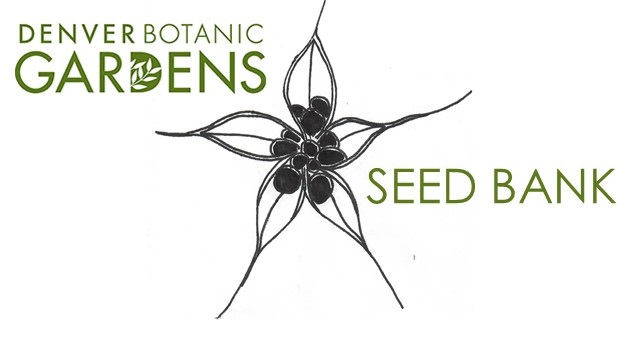

Storing and Transferring Seeds
Seeds are often used in germination trials, sent to other agencies for storage or research, or used to grow new progeny. Tracking the transfer of seeds is crucial and is done within the Research Database. Transfers of materials out of OR into the possession of Research and Conservation Staff should always be recorded. Complete the Biological Asset Transfer Form and save it here: Q:/Research/MySQLDatabase/DataUpdates/OutstandingRequests using the format YYYYMMDD_FirstInitialLastName_TransferName.